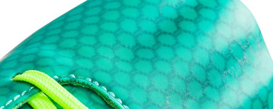
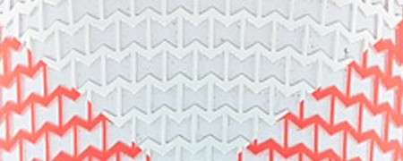

;){kind=link}
UPPER
Hecho con tecnología que cambiará el standard de ajuste y sensación en zapatos diseñados para los jugadores más rápidos.
El UA Speedform FG de sólo 209g está conformado por una talonera moldeada sin costuras y un upper con mesh ajustable que se combinan para sentirse como una extensión del pie.
La talonera anatómica sin costuras te da un ajuste y sensación del campo totalmente nuevas.
Hecho con tecnología que cambiará el standard de ajuste y sensación en zapatos diseñados para los jugadores más rápidos.
El UA Speedform FG de sólo 209g está conformado por una talonera moldeada sin costuras y un upper con mesh ajustable que se combinan para sentirse como una extensión del pie.
La talonera anatómica sin costuras te da un ajuste y sensación del campo totalmente nuevas.

SUELA
Para mayor explosividad dentro del campo, está construido sobre una suela cromada Pebax virtualmente sin peso resultando en una tracción increíble y un primer paso explosivo.

Para mayor explosividad dentro del campo, está construido sobre una suela cromada Pebax virtualmente sin peso resultando en una tracción increíble y un primer paso explosivo.
PUNTA
Cuenta con dedos pre-moldeados para un mejor ajuste del pie.
Cuenta con dedos pre-moldeados para un mejor ajuste del pie.

UPPER
Hecho de microfibra Trivela para un rendimiento superior que tiene características 2-way stretch que trabajan con el Sistema de encaje simétrico que proveen un ajuste y sensación sin precedentes a lo largo del calzado.
Los patrones externos de goma te permiten tener un mejor control y toque sobre el balón en cualquier condición.
El soporte externo del talón crea una mezcla perfecta de ajuste de talón y confort.
Hecho de microfibra Trivela para un rendimiento superior que tiene características 2-way stretch que trabajan con el Sistema de encaje simétrico que proveen un ajuste y sensación sin precedentes a lo largo del calzado.
Los patrones externos de goma te permiten tener un mejor control y toque sobre el balón en cualquier condición.
El soporte externo del talón crea una mezcla perfecta de ajuste de talón y confort.
PLANTILLA
Moldeada en 4D Foam que te da un óptimo confort mientras reduce la presión de los tacos. Te mantiene más pegado al piso incrementando la estabilidad y absorción de choque.
Moldeada en 4D Foam que te da un óptimo confort mientras reduce la presión de los tacos. Te mantiene más pegado al piso incrementando la estabilidad y absorción de choque.
SUELA
Nuestro TPU trabaja en conjunto con los movimientos naturales del pie para incrementar la tracción sin sacrificar la estabilidad.
Nuestro TPU trabaja en conjunto con los movimientos naturales del pie para incrementar la tracción sin sacrificar la estabilidad.
Speedform CRM FG
Clutchfit Force FG